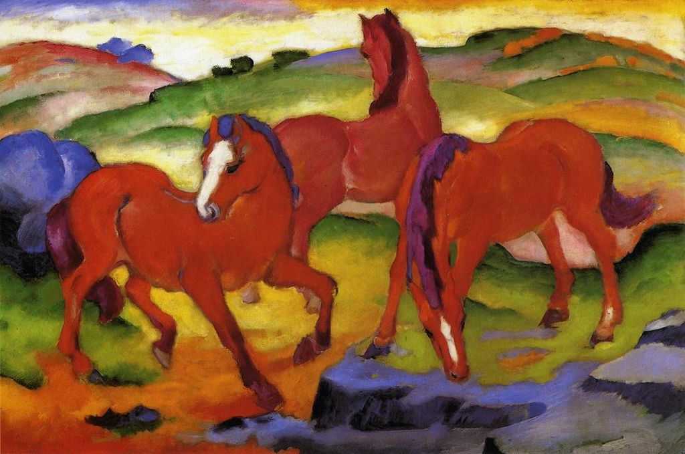

<head>
<meta charset="UTF-8" />
<meta name="keywords" content="drawing, painting" />
<meta name="description" content="drawings by Sunjy" />
<title>Sunjy</title>
<link rel="shortcut icon" type="image/x-icon" href="../../mImages/mCommon/favicon.ico" media="screen" />
<link rel="stylesheet" type="text/css" href="../../mCsses/mCommon/mCssA.css" />
<link rel="stylesheet" type="text/css" href="../../mCsses/mCommon/mCssB.css" />
<link rel="stylesheet" type="text/css" href="../../mCsses/mCommon/mCssC.css" />
<link rel="stylesheet" type="text/css" href="../../mCsses/mCommon/mCssD.css" />
<link rel="stylesheet" type="text/css" href="../../mCsses/mContent/mCssA.css" />
<link rel="stylesheet" type="text/css" href="../../mCsses/mContent/mCssB.css" />
<link rel="stylesheet" type="text/css" href="../../mCsses/mContent/mCssC.css" />
<link rel="stylesheet" type="text/css" href="../../mCsses/mContent/mCssD.css" />
</head>
<script type="text/javascript" src="../../mScripts/mContent/mContentAA.js" /></script>
<script type="text/javascript" src="../../mScripts/mContent/mContentAB.js" /></script>
<script type="text/javascript" src="../../mScripts/mContent/mContentAC.js" /></script>
<script type="text/javascript" src="../../mScripts/mContent/mContentAD.js" /></script>
<script type="text/javascript"></script> 
<script type="text/javascript">
document.write('<div class="mImgAbsolute"></div>');
/*
document.write('<p class="mFontSizeBColor" />From a white paper...</p>');
document.write('<table class="center"><tr><td>');
document.write('');
document.write('</td></tr></table>');
*/
</script>


<script type="text/javascript">
document.write('<p class="mFontSizeBColor" />Grazing Horses IV, Three Red Horses </p>');
document.write('<p class="mFontSizeSColor" />In 1911, the Der Blaue Reiter group was preoccupied with questions of color, and it was during this debate that Marc started working on Grazing Horses IV.<br><br>He wanted to give form to his inner experience and to free himself from formal constraints; he wanted to detach color from its descriptive function and assigned each primary color a symbolic value.<br><br>As this painting’s numeric title suggests, Marc repeatedly returned to the horse as a subject.<br><br>This painting first belonged to a German Museum, which was at the vanguard of contemporary art collecting at the time.<br><br>This picture was removed from the collection in 1937 as part of the Nazi campaign to rid German museums of “degenerate art.”<br></p>');
document.write('<table class="center" /><tr><td>');
document.write('<br>He wanted to give form to his inner experience and to free himself from formal constraints; he wanted to detach color from its descriptive function and assigned each primary color a symbolic value.<br><br>As this painting’s numeric title suggests, Marc repeatedly returned to the horse as a subject.<br><br>This painting first belonged to a German Museum, which was at the vanguard of contemporary art collecting at the time.<br><br>This picture was removed from the collection in 1937 as part of the Nazi campaign to rid German museums of “degenerate art.”<br>" />');
document.write('</td></tr></table>');
</script>


